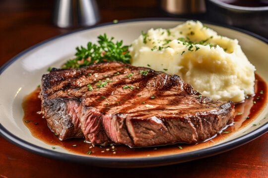

Steak with mashed potatoes

Some words for this dish
Juicy steak, seared and flavorful, pairs with creamy, buttery mashed potatoes,
creating a rich, hearty, and satisfying meal experience.
Ingridients
- Steak
- Potatoes
- Milk
- Salt
- Pepper
- Garlic
Steps to make steak with mashed potatoes
- Season the steak with salt, pepper, garlic, and fresh herbs.
- Heat a skillet over medium-high heat until it's sizzling hot
- Sear the steak for three minutes on each side until browned.
- Transfer the steak to the oven to finish cooking to desired doneness.
- Boil peeled potatoes until soft, then drain and mash thoroughly.
- Add butter, cream, salt, and pepper to the mashed potatoes mixture.
- Serve the steak with mashed potatoes, garnished with herbs for flavor.